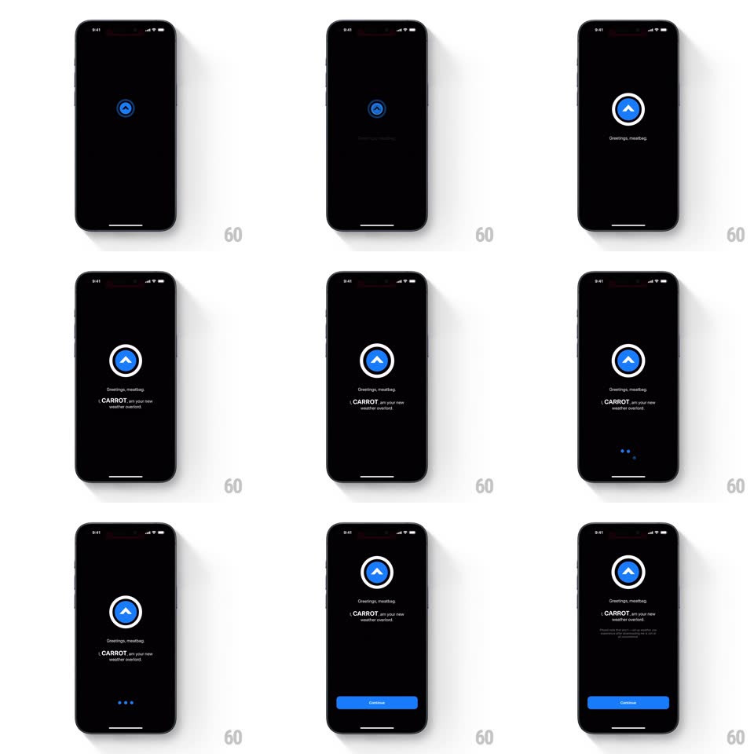

Media
Frame-by-frame

Rebuild this interaction 1:1: CARROT's intro - the blue eye logo scales up on black and gains its white ring, then lines type in ("Greetings, meatbag." / "I, CARROT, am your new weather overlord.") before a Continue button slides up.

Rebuild this interaction 1:1: CARROT's intro - the blue eye logo scales up on black and gains its white ring, then lines type in ("Greetings, meatbag." / "I, CARROT, am your new weather overlord.") before a Continue button slides up.
## Integration
Integration: stack-agnostic spec - springs given as stiffness/damping, timed motions as duration + curve; map every value to your framework and animation library of choice.
## Scene
Pure black: the CARROT eye (blue rounded square with a white chevron pupil) grows from small to centered-large inside a white ring; beneath it the greeting lines in white (CARROT in bold), three loading dots, and finally a blue Continue button.
## Motion spec
Pattern: scaling logo reveal + typed manifesto.
- The eye starts tiny and scales up with a spring (~300/18, slight overshoot) while the white ring draws around it (trim, 400ms, starting 150ms in).
- "Greetings, meatbag." fades in letter-by-letter feel (stagger 30ms per word chunk, 400ms total) under the logo.
- After a beat, "I, CARROT, am your new weather overlord." appears the same way below it, with "CARROT" bolded.
- Three dots pulse in sequence (opacity 0.2 -> 1, 300ms each, one cycle) where the button will land.
- Continue slides up from the bottom (spring ~320/24) and the dots fade out.
## Calibration
- The logo's growth is the opening beat - nothing else moves until it lands.
- Copy is centered and sparse; the black stays black.
## Reduced motion
Logo and lines fade in; Continue fades up.
## Don't miss
- The white ring completes AFTER the eye scales - two beats, not one.
- The attitude is the brand: keep "meatbag" and "weather overlord" exactly.